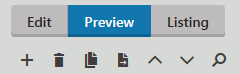

Editing pages
There are two main differences between editing structured pages and Page (menu item) pages in Kentico:
In the Pages application, you mainly edit the content of structured pages on the Form tab.
In the Pages application, you mainly edit the content of Page (menu item) pages on the Page tab.
In this topic, you can learn about:
Editing pages in the Pages application
Open the Pages application.
In Content tree, click on the page that you want to edit.
Switch to the Form tab.

Use the editor to make changes to the page.
Save the changes that you made.
The system reloads the page to display the updated content. You can now preview the changes that you made to the page.
Previewing the changes that you made to the page
You can preview how the changed page looks by switching to the Preview view mode.
The Preview mode allows you to see how the page looks even if it hasn't been published yet. That is, you always see the last version of the page.

Live site allows you to see the page the way site visitors currently see it. Note, however, that Live site doesn't have to show the latest version of the page that you edited. For example, when the latest version of the page hasn't been published yet. To open Live site, use the Live site button in the Application list.
Editing pages on the Live site
Log on to the live site.
Click on Edit page in the top left corner.

Navigate to the page that you want to edit.Move your mouse over the section of the page that you want to edit. The system automatically highlights the editable regions as you move your mouse over them.
You can use the Highlight action on the on-site editing toolbar above the page. The button makes all editable items placed on the page visible at the same time. This way you can easily find all editable text regions and editable images and modify them as necessary.
Click on the Edit (
 ) button of the editable region that you want to edit. An Edit text dialog appears.
) button of the editable region that you want to edit. An Edit text dialog appears.Use the editor to make changes to the text.
Save the changes that you made.
The system reloads the page to display the updated content.
Live site allows you to see the page the way site visitors currently see it. Note, however, that Live site doesn't have to show the latest version of the page that you edited. For example, when the latest version of the page hasn't been published yet. To open Live site, use the Live site button in the Application list.
In many cases, page lists are configured to provide edit mode buttons, which are also visible when editing the live site. Such buttons are shown both on the list page next to individual items and when viewing the details of a specific page.
The Edit button works the same way as the corresponding action on the main toolbar.
Renaming pages
In Kentico, each page in the content tree has its name derived from the value of a particular field. The page name source field is determined by the page's type.
To rename a page, you need to edit the content of the field that is mapped as the page name source:
Open the Pages application.
Navigate to the page you want to rename.
Switch to the Form tab.
Edit the content of the appropriate field.
The name of the field usually contains keywords such as Title or Name.
If the Form tab contains too many fields or you are not able to find to correct field, you can ask an administrator to identify the field in the Page types application:
Open the Page types application and edit the page type of the page you wish to rename.
To find out the page type of a page, in the Pages application click Properties -> General and see the Type field.
Switch to the Fields tab.
In the Page name source field drop-down, you can see which field is used as the page name.
Select the page name field in the panel on the left.
In the Field appearance category, find Field caption (this value is displayed on the Form tab of pages).